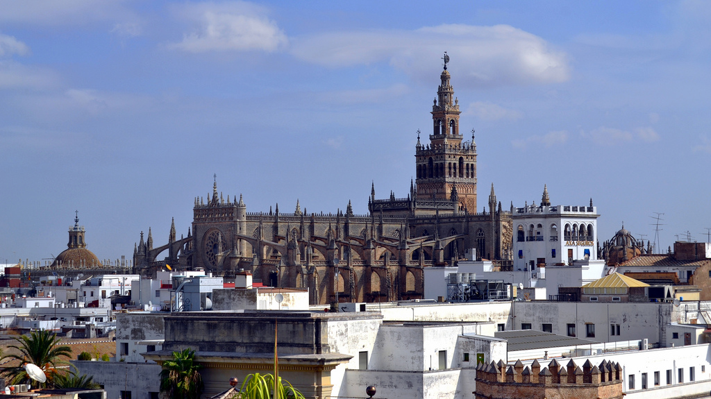
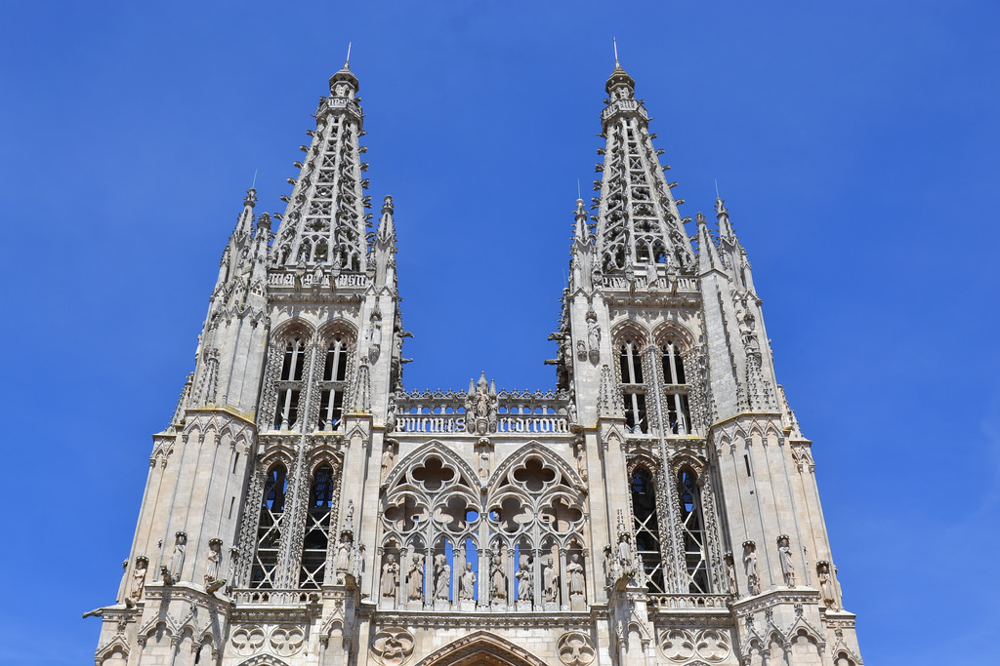

La Vuelta a España es un intento por recorrer las 50 provincias de España y sus 2 ciudades autónomas (Ceuta y Melilla) en 50+2 semanas, justamente las semanas que componen un año. No sé si lograré la meta de visitarlas todas y casi con toda seguridad no será en 52 semanas consecutivas,[1] pero lo intentaré. De todas formas si necesitara 2 ó 3 años (o más) para completar la ruta, no me importaría.[2]
A lo largo de mi vida ya había visitado las provincias de Barcelona, Cáceres, Cádiz, Córdoba, Granada, Madrid, Málaga y Sevilla, por lo que daré prioridad a visitar aquellas que aún no he conocido. La idea de dar la vuelta a España me surgió después de visitar en menos de 15 días las provincias de Toledo y Segovia, gracias a su proximidad a Madrid, donde estoy viviendo temporalmente. Entonces pensé en la posibilidad de visitar otras provincias limítrofes con Madrid y quizás más alla.
Para aquellos destinos que quedan a menos de 2 horas en tren desde Madrid, he ido y vuelto en el mismo día (salgo por la mañana temprano y vuelvo por la tarde-noche). Cuando supere ese tiempo de desplazamiento valoraré el pasar una noche en algún hostal y estar dos días en el destino (o algo más). El medio de transporte que habitualmente utilizo para desplazamientos de más de 50 km es el tren. Es cierto que es ligeramente más caro que el autobús o el coche, pero también es más cómodo, rápido y seguro (creo).
A continuación voy relatando mi paso por las distintas etapas completadas hasta el momento. Me gusta la fotografía, de modo que acompaño los textos con algunas de las imágenes tomadas en los viajes, las galerías completas se encuentran en Flickr.
| Tabla de contenidos |
|---|
|
1. Etapas 1.1 Etapa 1: Toledo 1.2 Etapa 2: Segovia 1.3 Etapa 3: Ávila 1.4 Etapa 4: Guadalajara 1.5 Etapa 5: Madrid 1.6 Etapa 6: Cuenca 1.7 Etapa 7: Salamanca 1.8 Etapa 8: Sevilla 1.9 Etapa 9: Cádiz 1.10 Etapa 10: Málaga 1.11 Etapa 11: Burgos 1.12 Etapa 12: Valladolid 2. Notas |
Cada etapa tiene su propia sección y están ordenadas cronológicamente. También puedes ver todas las etapas juntas.
| Etapa 1: Toledo | |||||
|---|---|---|---|---|---|
| Provincia: Toledo | Superficie: 15.369 km2 | Población: 699.136 (45 hab./km2) | | ||
| Municipio(s) visitado(s): Toledo | |||||
| Distancia recorrida: 70 km | Fecha: 17 de mayo de 2016 | Duración: 1 día | |||
| Arquitectura civil: Alcázar de Toledo, Castillo de San Severiano, Estación de tren de Toledo | |||||
| Arquitectura religiosa: Catedral de Toledo, Sinagoga de Toledo | |||||
| Museos: Museo de El Greco, Museo de Santa Cruz | |||||
| Naturaleza: Río Tajo | |||||
| Otros: Academia de Infantería, Plaza Zocodover, Puente de Alcántara | |||||
| Etapa 2: Segovia | |||||
|---|---|---|---|---|---|
| Provincia: Segovia | Superficie: 6.920 km2 | Población: 161.702 (23 hab./km2) |  | ||
| Municipio(s) visitado(s): Segovia | |||||
| Distancia recorrida: 90 km | Fecha: 24 de mayo de 2016 | Duración: 1 día | |||
| Arquitectura civil: Acueducto de Segovia, Alcázar de Segovia, Estación de Segovia-Guiomar, Murallas de Segovia | |||||
| Arquitectura religiosa: Catedral de Segovia | |||||
| Museos: Casa de Antonio Machado | |||||
| Naturaleza: Sierra de Peñalara | |||||
| Otros: Plaza de la Artillería, Plaza Mayor de Segovia, Túnel ferroviario de la Sierra de Guadarrama | |||||
| Etapa 3: Ávila | |||||
|---|---|---|---|---|---|
| Provincia: Ávila | Superficie: 8.048 km2 | Población: 167.015 (20 hab./km2) |  | ||
| Municipio(s) visitado(s): Ávila | |||||
| Distancia recorrida: 110 km | Fecha: 1 de junio de 2016 | Duración: 1 día | |||
| Arquitectura civil: Murallas de Ávila | |||||
| Arquitectura religiosa: Basílica de San Vicente, Catedral de Ávila, Los 4 Postes | |||||
| Museos: Archivo General Militar de Ávila | |||||
| Naturaleza: Río Adaja | |||||
| Otros: Arco del Mariscal, Plaza del Mercado chico | |||||
| Etapa 4: Guadalajara | |||||
|---|---|---|---|---|---|
| Provincia: Guadalajara | Superficie: 12.167 km2 | Población: 259.537 (21 hab./km2) | |||
| Municipio(s) visitado(s): Guadalajara | |||||
| Distancia recorrida: 60 km | Fecha: 17 de junio de 2016 | Duración: 1 día | |||
| Arquitectura civil: | |||||
| Arquitectura religiosa: | |||||
| Museos: | |||||
| Naturaleza: | |||||
| Otros: | |||||
| Etapa 5: Madrid | |||||
|---|---|---|---|---|---|
| Provincia: Madrid | Superficie: 8.021 km2 | Población: 6.436.996 (809 hab./km2) |  | ||
| Municipio(s) visitado(s): Alcalá de Henares, Aranjuez, Madrid | |||||
| Distancia recorrida: 0 km | Fecha: 2016 | Duración: | |||
| Arquitectura civil: | |||||
| Arquitectura religiosa: | |||||
| Museos: | |||||
| Naturaleza: | |||||
| Otros: | |||||
| Etapa 6: Cuenca | |||||
|---|---|---|---|---|---|
| Provincia: Cuenca | Superficie: 17.141 km2 | Población: 203.841 (11 hab./km2) | |||
| Municipio(s) visitado(s): Alcocer, Chillaron de Cuenca, Cuenca, Sacedón, Villar de Domingo García | |||||
| Distancia recorrida: | Fecha: | Duración: 1 día | |||
| Arquitectura civil: | |||||
| Arquitectura religiosa: | |||||
| Museos: | |||||
| Naturaleza: | |||||
| Otros: | |||||
| Etapa 7: Salamanca | |||||
|---|---|---|---|---|---|
| Provincia: Salamanca | Superficie: km2 | Población: ( hab./km2) |  | ||
| Municipio(s) visitado(s): Salamanca | |||||
| Distancia recorrida: | Fecha: | Duración: 1 día | |||
| Arquitectura civil: | |||||
| Arquitectura religiosa: | |||||
| Museos: | |||||
| Naturaleza: | |||||
| Otros: | |||||
| Etapa 8: Sevilla | |||||
|---|---|---|---|---|---|
| Provincia: Sevilla | Superficie: km2 | Población: ( hab./km2) |  | ||
| Municipio(s) visitado(s): Santiponce | |||||
| Distancia recorrida: | Fecha: | Duración: 1 día | |||
| Arquitectura civil: | |||||
| Arquitectura religiosa: | |||||
| Museos: | |||||
| Naturaleza: | |||||
| Otros: | |||||
| Etapa 9: Cádiz | |||||
|---|---|---|---|---|---|
| Provincia: Cádiz | Superficie: km2 | Población: ( hab./km2) |  | ||
| Municipio(s) visitado(s): Arcos de la Frontera, Benalup-Casas Viejas, Medina-Sidonia, Vejer de la Frontera | |||||
| Distancia recorrida: | Fecha: | Duración: 4 días (1 día por municipio) | |||
| Arquitectura civil: | |||||
| Arquitectura religiosa: | |||||
| Museos: | |||||
| Naturaleza: | |||||
| Otros: | |||||
| Etapa 10: Málaga | |||||
|---|---|---|---|---|---|
| Provincia: Málaga | Superficie: km2 | Población: ( hab./km2) |  | ||
| Municipio(s) visitado(s): Estepona | |||||
| Distancia recorrida: | Fecha: | Duración: 1 día | |||
| Arquitectura civil: | |||||
| Arquitectura religiosa: | |||||
| Museos: | |||||
| Naturaleza: | |||||
| Otros: | |||||
| Etapa 11: Burgos | |||||
|---|---|---|---|---|---|
| Provincia: Burgos | Superficie: km2 | Población: ( hab./km2) |  | ||
| Municipio(s) visitado(s): Burgos | |||||
| Distancia recorrida: | Fecha: | Duración: 1 día | |||
| Arquitectura civil: | |||||
| Arquitectura religiosa: | |||||
| Museos: | |||||
| Naturaleza: | |||||
| Otros: | |||||
| Etapa 12: Valladolid | |||||
|---|---|---|---|---|---|
| Provincia: Valladolid | Superficie: km2 | Población: ( hab./km2) |  | ||
| Municipio(s) visitado(s): Valladolid | |||||
| Distancia recorrida: | Fecha: | Duración: 1 día | |||
| Arquitectura civil: | |||||
| Arquitectura religiosa: | |||||
| Museos: | |||||
| Naturaleza: | |||||
| Otros: | |||||

{kind=link}
{kind=link}
{kind=link}
{kind=link}